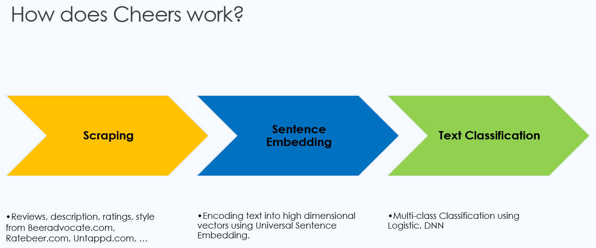
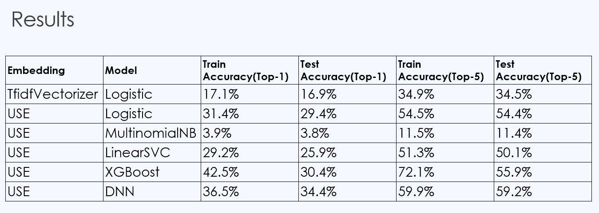
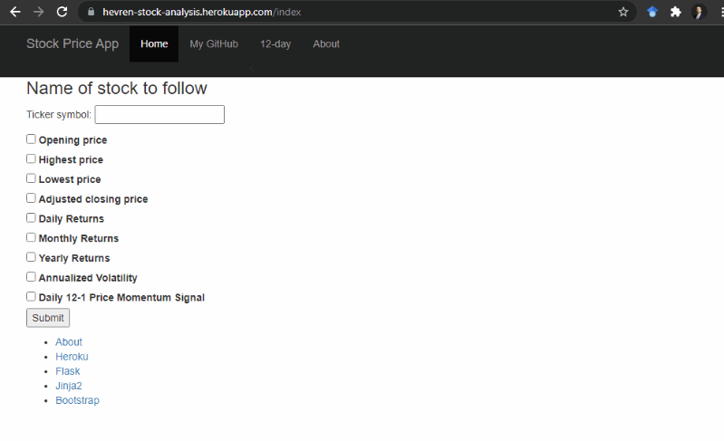
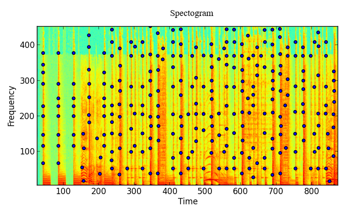
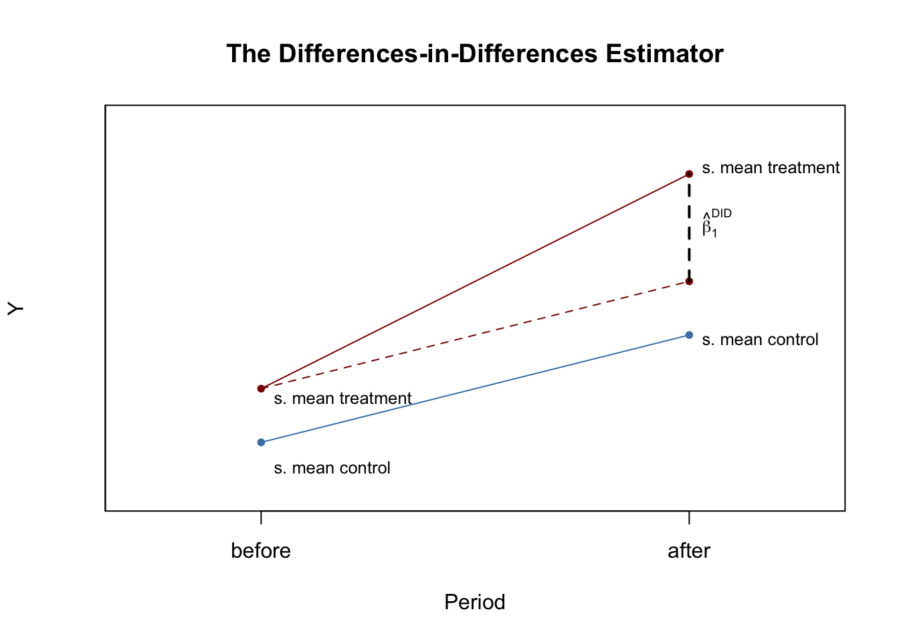
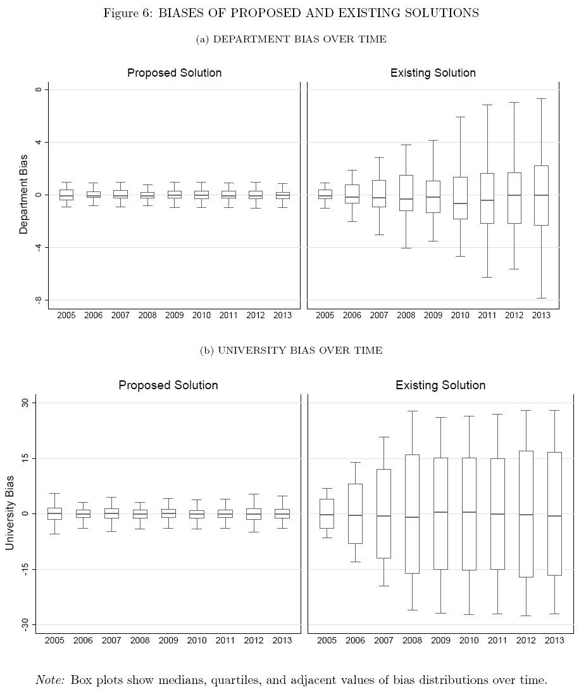
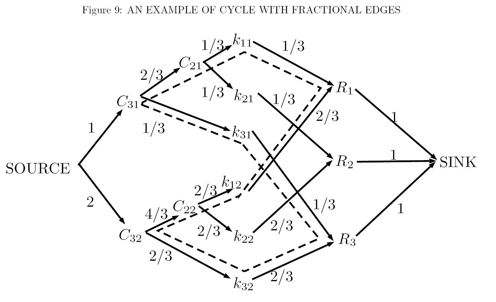

Cheers
NLP based recommender system using Scikit-Learn, Tensorflow, and Flask in a fully deployed web app
For more technical details, see
my github
repo and the demo below shows the main functionalities. You can view my completed app here.
An interactive web app that allows users to type the flavors/characteristics they find appealing and
shows five recommended beers and the user's taste profile.

I scraped thousands of consumer reviews and manufacture descriptions of their beers. These reviews
and descriptions are highly informative as they contain words that provide information the
characteristics of that beer.
Then I used Natural Language Processing (NLP) to uncover relationships between these descriptive
sentences and beers.
When the user inputs their own search terms, first algorithm transforms unstructured text data to
high dimensional vectors. With sentence embedding I can capture the context of the whole sentence in
a vector.
It allows us to understand the intention of the sentence.
Once the search terms vectorized, the algorithm classifies these vectors.

I tried a variety of models for classification task (with and without tranfer learning). You can see
the performance of them below. Top-5 accuracy means any of our model's top 5 highest probability
answers match with the expected answer.
Top-5 accuracy means any of our model's top 5 highest probability answers match with the expected
answer.

Stock Analysis App
Retrieves data from Alpha Vantage and presents the financial analysis using Pandas, Bokeh and Flask
For more details, see github rep.
The demo below shows the main functionalities. You can view my completed app here.

Price plots: Opening, Highest, Lowest, Adjusted closing
Analysis plots: Candlestick Chart, Daily Returns, Monthly Returns, Yearly Returns, Annualized
Volatility, Daily 12-1 Price Momentum Signal
Senior Project
Clustering and Synchronizing of Audio Sequences
For more details on the scientific content of the project,
see my github page.
For my senior project, I developed an application that synchronizes heavily corrupted multi-audio
recordings within a few seconds of the core search time using a landmark-based audio fingerprinting
method in MATLAB.

By using FFT over small windows of time in the audio samples, we can create a spectrogram of the
audio sample. After that , we can find the peaks in amplitude. You can think it as a fingerprint for
the audio sample.
Econometrics Project
Schooling Aid vs College Attendance
For more details on the scientific content of the project,
see my paper.
For the final project of BC's Graduate Level Applied Econometrics course ECON 8823, I examined the
effect of schooling aid on college attendance. I utilized DID estimator fo the identification. It is
a useful technique in impact valuation when randomization on the individual level is
not possible.

- The research question is whether schooling aid increases college attendance or it just
financially
supports students who would have gone to college regardless of aid.
- Examining the effect of schooling aid on college attendance is challenging because treated and
untreated students can differ in unobservable characteristics correlated with potential
outcomes,
even controlling for differences in observed characteristics.
- However, we can use a difference-in-differences estimator for identification strategy.
The Social Security Administration has provided benefits to the children of deceased, disabled,
and
retired Social Security beneficiaries until those children are 18.
- Using difference-in-differences analysis, we find that the availability of $1000 of grant
(normalized to $2856) increases college attendance by 0.167 years and the probability of
attending
by 3.8%.
PhD Thesis
Affirmative Action in Two Dimensions: A Multi-Period Apportionment Problem
For more details on the content of the project,
see my paper.
Code and data associated with this paper are available on my github page.
This project develops an applied algorithm using statistics and graph theory to improve social and
economic impact.
Court's objections and public protests in India inspired us to formalize an affirmation action
issue. We document merit in debated proposals but also faults. We present an alternative solution
and measure the impact by running
simulations on 12k jobs. The result of the empirical case study is shown below.

Abstract: In many settings affirmative action
policies apply at two levels simultaneously, for
instance, at university as well as at its departments. We show that commonly used methods in
reserving positions for beneficiaries of affirmative action are often inadequate in such settings.
We present a comprehensive evaluation of existing procedures to formally document their
shortcomings. We propose a new solution with appealing theoretical properties and quantify the
benefits of adopting it using recruitment advertisement data from India.
The solution is built around a network flow algorithm that takes a flow network as input
and randomly constructs another flow network with fewer fractional flows as its output. By iterative
application of this algorithm,
a flow network with integral flows is generated.
